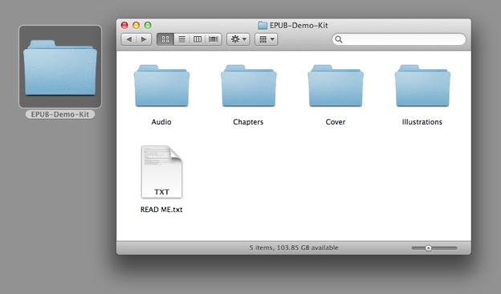
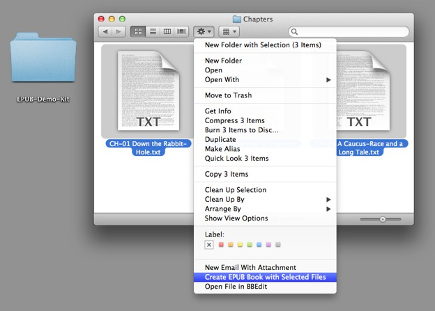
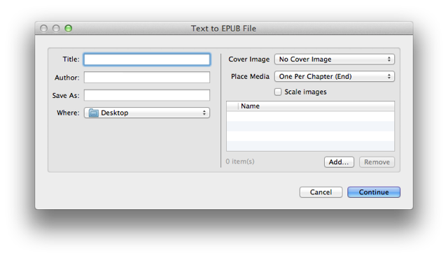
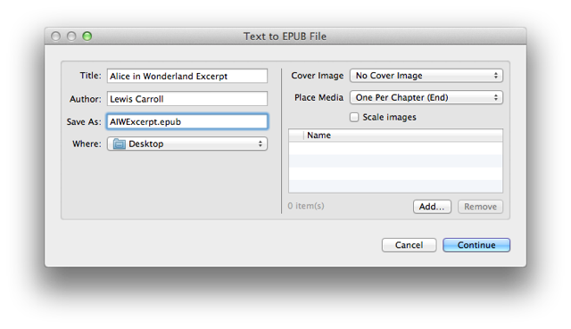

As you learned from the previous tutorial, in which you created a single chapter digital document, the minimum requirement for creating an EPUB book with the Text to EPUB services is the text for the book. Images, audio and/or video clips, are optional media that can be added to a book using the service’s interface when the service workflow is run.
In this workshop segment, you will create a multi-chpater digital publication that includes text and media, specifically, spoken narration audio clips (provided by Librivox) placed at the beginning of each chapter, and a collection of images from the original Alice in Wonderland book placed in an illustrations chapter at the end of the book. In addition, the digital book will be assigned a cover image that appears as the book’s cover in the iBooks library.
As a convenience, you can DOWNLOAD the completed example EPUB document.
The Demo Kit
For this workshop, a demo kit has been created that contains all of the elements necessary to create the digital book.
DO THIS ►Begin the tutorial by downloading the demo kit archive, unpacking the archive, and opening the folder containing the demo contents on your desktop: (⬇ see below )

The demo kit (⬆ see above ) contains:
- (Chapters folder) The text from three chapters of Alice in Wonderland, saved as individual text files;
- (Cover folder) A cover image;
- (Audio folder) Three audio files, each being a spoken reading of a chapter;
- (Illustrations folder) A collection of original book illustrations.
IMPORTANT: Audio files included in an EPUB document must be saved in MPEG (.m4a) format. Video files must be saved in MPEG (.m4v) format. The media files included in the demo kit are already encoded correctly for inclusion in an EPUB document. However, note that OS X includes powerful but easy-to-use built-in services for performing desktop encoding of audio files and encoding of video files in preparation for inclusion in EPUB documents.
Creating the Book
We’ll create a multi-chapter EPUB in two-steps, in this workshop segment start the process and enter the metadata about the digital file. In the next workshop segment, you’ll add media to the publication.
To create an EPUB book containing multiple chapters, you must first select the text files that will be used as the source for each chapter, and then launch the EPUB creation service.
DO THIS ►Open the folder named "Chapters," select the three text files, and then choose the Create EPUB Book with Selected Files service from the Finder action menu: (⬇ see below )

The "Text to EPUB" dialog will appear. The dialog is the view for the Automator action that does the work of creating the publication. The left side of the dialog is for entering information about the publication and determining the name and location for the created EPUB document. The right side of the dialog is for identifying any optional media you wish to add to the publication.

DO THIS ►Enter a title for the example publication (Alice in Wonderland Excerpt), the author’s name (Lewis Carroll), and a name for the EPUB document (AIWExcerpt.epub). Be sure to end the EPUB file name with the name extension: .epub
For the pursposes of this tutorial, leave the destination folder indicated in the “Where” popup menu, set to the Desktop.

Now that the file and book information has been entered, you can add media to the book.